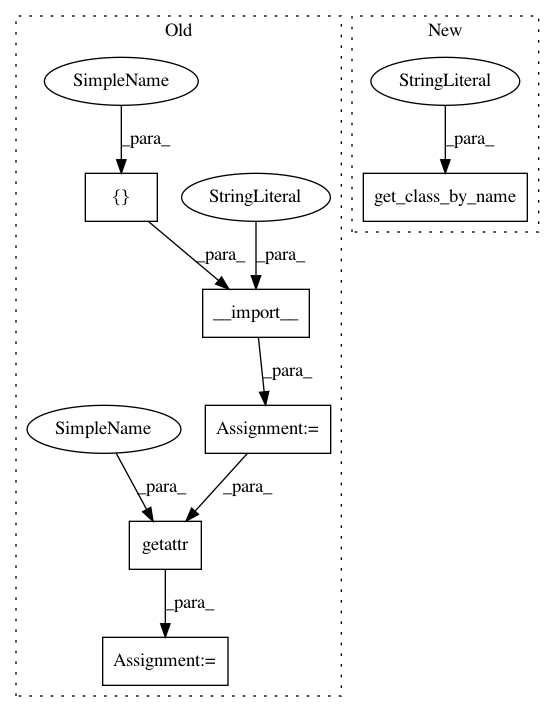

f18fd2dd4491e09035e25121b8185338a136bfbf,pyannote/audio/applications/feature_extraction.py,,extract,#Any#Any#Any#Any#Any#,160
Before Change
config = yaml.load(fp)
feature_extraction_name = config["feature_extraction"]["name"]
features = __import__("pyannote.audio.features",
fromlist=[feature_extraction_name])
FeatureExtraction = getattr(features, feature_extraction_name)
feature_extraction = FeatureExtraction(
**config["feature_extraction"].get("params", {}))
sliding_window = feature_extraction.sliding_window
After Change
dimension = feature_extraction.dimension
if "normalization" in config:
FeatureNormalization = get_class_by_name(
config["normalization"]["name"],
default_module_name="pyannote.audio.features.normalization")
normalization = FeatureNormalization(
**config["normalization"].get("params", {}))
else:
normalization = None
In pattern: SUPERPATTERN
Frequency: 3
Non-data size: 6
Instances
Project Name: pyannote/pyannote-audio
Commit Name: f18fd2dd4491e09035e25121b8185338a136bfbf
Time: 2018-10-09
Author: bredin@limsi.fr
File Name: pyannote/audio/applications/feature_extraction.py
Class Name:
Method Name: extract
Project Name: pyannote/pyannote-audio
Commit Name: f18fd2dd4491e09035e25121b8185338a136bfbf
Time: 2018-10-09
Author: bredin@limsi.fr
File Name: pyannote/audio/applications/speech_detection.py
Class Name: SpeechActivityDetection
Method Name: __init__
Project Name: pyannote/pyannote-audio
Commit Name: f18fd2dd4491e09035e25121b8185338a136bfbf
Time: 2018-10-09
Author: bredin@limsi.fr
File Name: pyannote/audio/applications/feature_extraction.py
Class Name:
Method Name: extract
Project Name: pyannote/pyannote-audio
Commit Name: f18fd2dd4491e09035e25121b8185338a136bfbf
Time: 2018-10-09
Author: bredin@limsi.fr
File Name: pyannote/audio/applications/feature_extraction.py
Class Name:
Method Name: init_feature_extraction